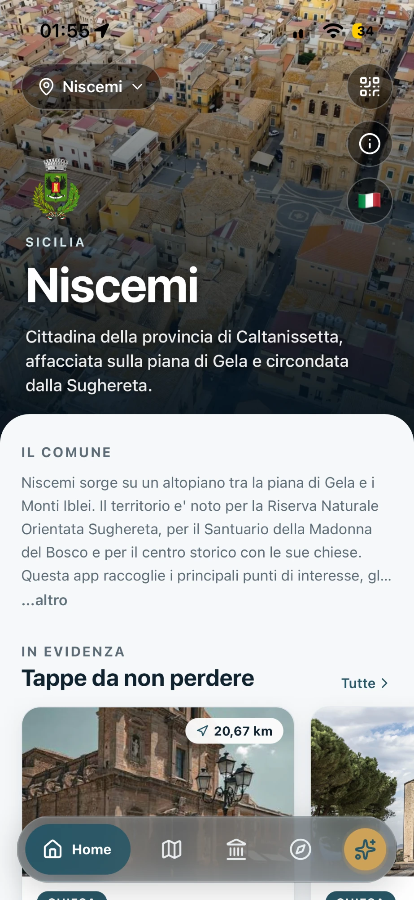
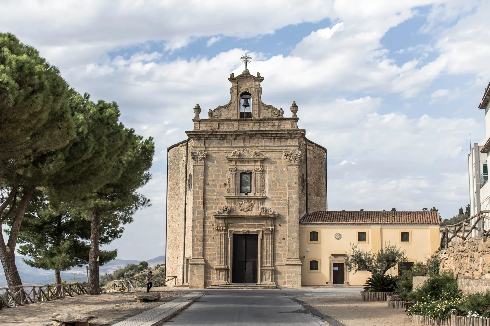
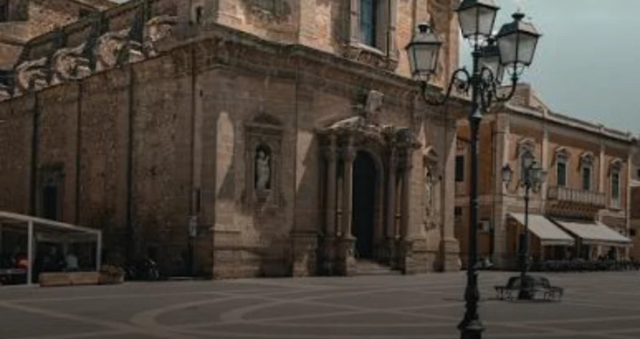
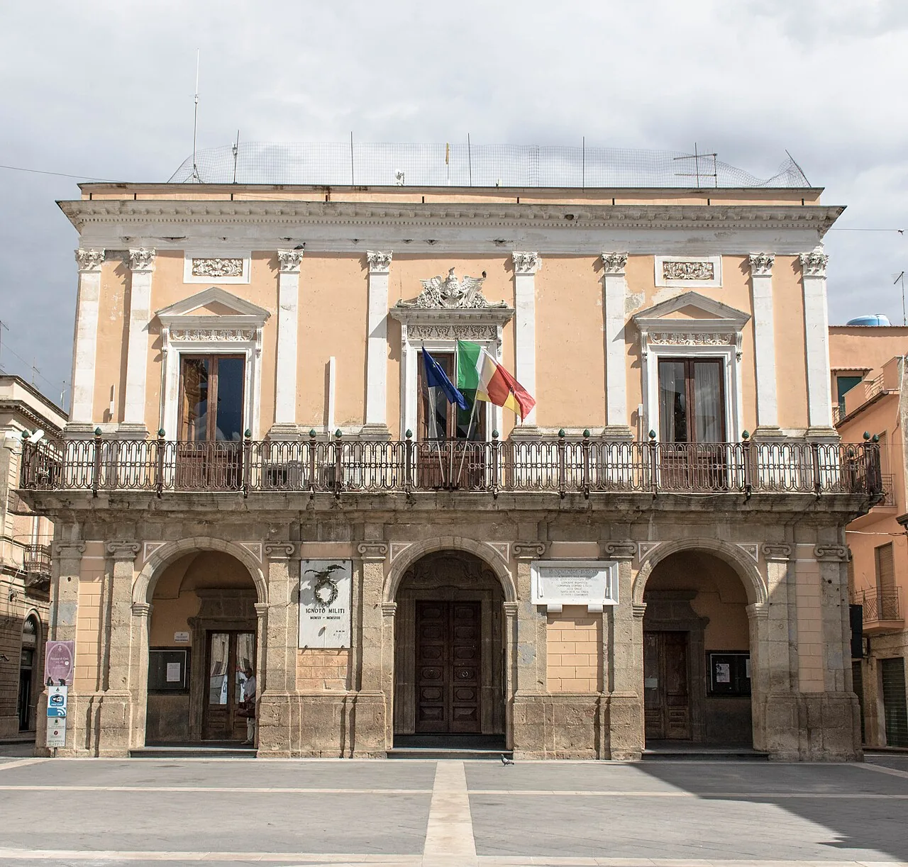

La storia di Niscemi, in tasca.
Itinerari guidati, audioguide, tour immersivi a 360° e quiz per scoprire le chiese e le piazze del centro storico, il Santuario della Madonna del Bosco e la Sughereta. Scarica Heritage e scegli Niscemi.

Una guida che cammina con te
Dalla mappa degli itinerari al racconto di ogni luogo: ecco cosa trovi aprendo Niscemi in Heritage.
-
QuizMetti alla prova ciò che hai scoperto su Niscemi, da soli, in famiglia o in classe.
-
Sempre aggiornataI nuovi contenuti arrivano direttamente nell'app, senza aggiornarla dallo store.
-
Italiano e ingleseTesti e schede nelle due lingue, per cittadini e visitatori.
Una città affacciata sulla Piana di Gela
Niscemi sorge su un altopiano tra la Piana di Gela e i Monti Iblei, circondata dalla Riserva della Sughereta. Questi sono alcuni dei luoghi che trovi nell'app.
-

Santuario della Madonna del Bosco
Dedicato alla patrona di Niscemi, immerso nella Sughereta.
-

Chiesa Madre Santa Maria d'Itria
Il principale luogo di culto del centro storico.
-
Piazza Vittorio Emanuele
Il salotto urbano di Niscemi, anche in vista a 360°.
-

Palazzo Comunale
La sede del Municipio, centro amministrativo della città.
- Durata
- 90 min
- Tappe
- 3
- Durata
- 120 min
- Tappe
- 2
Inizia a esplorare Niscemi
Scarica Heritage e scegli Niscemi dall'elenco dei comuni. Poi scopri la storia della città, una tappa alla volta.